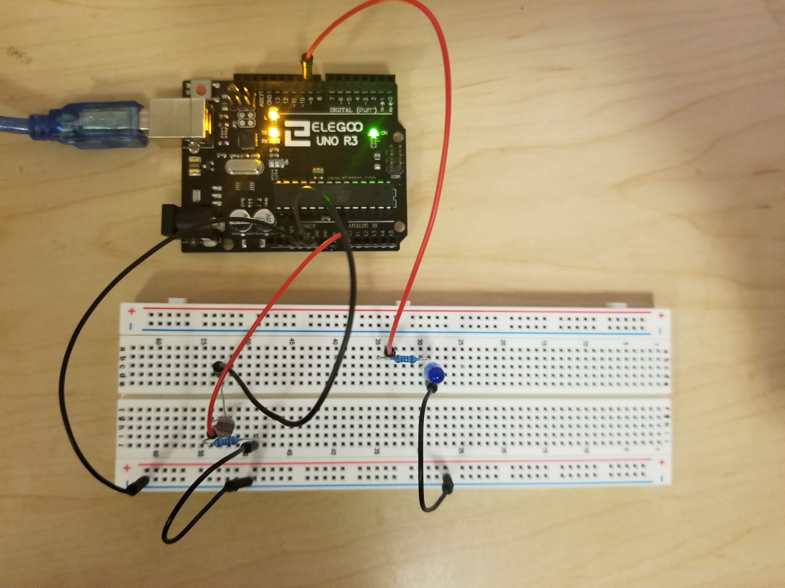

Assignment 2: Fade
Overview
Create a schematic, circuit, and code that uses a sensor (e.g. either the photoresistor or the thermistor) in a voltage divider to change the state of an LED while using analogRead(), analogWrite(), the map function, and an if-statement in code.
A snippet of the schematic:
When assuming that LEDs are run at 20 mA, it is calculated that the blue LED needs 85 Ohms of resistance, so I used the 100 Ohm resistor. Assuming that 200mA of current can flow through the photoresistor, it is calcuated to require 25 Ohms of resistance. I used the 10k Ohm resistor.
What the circuit looks like:

I used the blue LED and connected it to pin 9, with a photoresistor connected to A0 for measurement. The circuit is connected to 5V and ground.
Here's my code:
const int analogInPin = A0; // Analog input pin that the photoresistor is attached to
const int blueLED = 9; // Analog output pin that the blue LED is attached to
int sensorValue = 0; // value read from the photoresistor
int outputValue = 0; // value output to the PWM (analog out)
void setup() {
Serial.begin(9600); // initialize serial communications at 9600 bps:
pinMode(blueLED, OUTPUT); // initializing the blue LED as output
pinMode(analogInPin, INPUT); // Initializing the photoresistor as input
}
void loop() {
sensorValue = analogRead(analogInPin); // read the analog in value
outputValue = map(sensorValue, 0, 1023, 0, 255); // map the sensor value to the blue LED
if (outputValue > 200) { // if the output value is greater than 200, turn the LED on
analogWrite(blueLED, 0); // write LED on
Serial.println("BLUE LED IS ON WOOP WOOP"); // write to the serial monitor that the LED is on
} else if (outputValue <= 200) { // if the output value is equal to or less than 200, turn the LED off
analogWrite(blueLED, 255); // write LED off
Serial.println("BLUE LED IS OFF"); // write to the serial monitor that the LED is off
}
// wait 2 milliseconds before the next loop for the analog-to-digital
// converter to settle after the last reading:
delay(2);
}
See it in action: